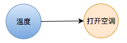
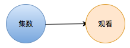
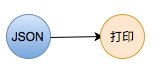
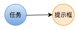

Observer - 观察者

观察者 是用来监听事件，然后它需要这个事件做出响应。例如：弹出提示框就是观察者，它对点击按钮这个事件做出响应。
响应事件的都是观察者
在 Observable 章节，我们举了个几个例子来介绍什么是可监听序列。那么我们还是用这几个例子来解释一下什么是观察者：
当室温高于 33 度时，打开空调降温

打开空调降温就是观察者
Observer<Double>。当《海贼王》更新一集时，我们就立即观看这一集

观看这一集就是观察者
Observer<OnePieceEpisode>。当取到 JSON 时，将它打印出来

将它打印出来就是观察者
Observer<JSON>当任务结束后，提示用户任务已完成

提示用户任务已完成就是观察者
Observer<Void>
如何创建观察者
现在我们已经知道观察者主要是做什么的了。那么我们要怎么创建它们呢？
和 Observable 一样，框架已经帮我们创建好了许多常用的观察者。例如：view 是否隐藏，button 是否可点击， label 的当前文本，imageView 的当前图片等等。
另外，有一些自定义的观察者是需要我们自己创建的。这里介绍一下创建观察者最基本的方法，例如，我们创建一个弹出提示框的的观察者：
tap.subscribe(onNext: { [weak self] in
self?.showAlert()
}, onError: { error in
print("发生错误： \(error.localizedDescription)")
}, onCompleted: {
print("任务完成")
})
创建观察者最直接的方法就是在 Observable 的 subscribe 方法后面描述，事件发生时，需要如何做出响应。而观察者就是由后面的 onNext，onError，onCompleted的这些闭包构建出来的。
以上是创建观察者最常见的方法。当然你还可以通过其他的方式来创建观察者，可以参考一下 AnyObserver 和 Binder。
特征观察者
和 Observable 一样，观察者也存特征观察者，例如：